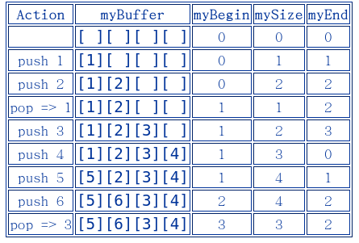

所有的STL容器都定义了：
没有定义上面两种的容器被看做二等公民，他们不能和泛型算法一起使用，为你的容器定义迭代器类型和begin、end方法，无论他们是否是泛型容器
若你的容器中使用了STL容器作为内部数据成员，那么只需要将迭代器和两个方法的实现托付给STL容器即可。
例如，假如你有一个类CourseList，它表示学生参加的课程的列表，在其内部使用了一个Student的Vector来存储课程列表。对这样的自定义容器只需要依赖STL容器Vector即可：
xxxxxxxxxx131class CourseList {2private:3 typedef vector<Student> StudentList;4 StudentList students;5 6public:7 typedef StudentList::iterator iterator;8 typedef StudentList::const_iterator const_iterator;9 10 iterator begin() { return students.begin(); }11 iterator end() { return students.end(); }12 ...13};换句话讲，我们做的仅仅是：
C指针是合法的迭代器，因此若你的内部用来存放数据的容器是一个C数组，你需要做的仅仅就是返回指针。例，我们将StudentList实现为一个C数组：
xxxxxxxxxx121class CourseList {2private:3 typedef Student StudentList[100];4 StudentList students; 5 6public:7 typedef Student * iterator; 8 typedef const Student * const_iterator; 9 10 iterator begin() { return &students[0]; } //11 iterator end() { return &students[100]; } //12};
有时候需要一个普通容器的迭代器的变体，比如该迭代器可以计数，或者迭代器可以检查是否在一个合法范围
定义这种特殊的迭代器通常需要使用委托模式，新迭代器的构造函数要初始化某种存在的迭代器，以及其它所需要的信息，并将某种已有的迭代器作为私有成员变量，然后这个自定义的迭代器的operator++ operator* 只是添加一些额外的功能然后调用那个已有的迭代器变量的++ 与* 操作符
最后一种情况是为一个新类型的容器定义迭代器。
STL中不使用类的层次结构和继承，因此当定义一个迭代器时，无法以“迭代器超类”为基础开始定义。不过只要定义了部分或全部的迭代器操作符，它就可以称为是迭代器。
基本的迭代器操作符如下：
作为容器的例子，下面先实现一个环形队列：
环形队列是一个有限大小的队列，并且它不会变满或超出固定大小，相反地，新元素会覆盖旧元素，一个环形队列能保持对数字流中最新的那些值的追踪，并且在添加新元素是自动地将旧元素抛弃。比如，环形队列可能用在求最近的N个数字的平均值。
我们将实现一个这样的环形队列：
xxxxxxxxxx11RingQueue< int, 5 > ringQueue;//创建了五个元素的环形队列像普通的队列一样，可以向队末压入元素，从队首弹出元素，但也有一些差别：
back_inserter
常规的实现环形队列的方法时用数组和两个特殊的数字：
myBegin在初始状态时为0，即数组的第一个元素。环形队列的队尾可以通过下面的计算得到：
可以定义如下的访问器：
改变myBegin和mySize的规则：
例子：

从直观来讲，我们想把begin()和end()函数定义为：
但这么做是有问题的
xxxxxxxxxx101RingQueue<int, 4> rq;2
3for ( int i = 0; i < 10 ++i ) rq.push_back( i * i );4
5cout << "There are " << rq.size() << " elements." << endl;6cout << "Here they are:" << endl;7copy( rq.begin(), rq.end(),8 ostream_iterator<int>( cout, "\n" ) );9cout << "Done" << endl;10 输出：
xxxxxxxxxx41There are 4 elements.2Here they are:3Done4
并不能正常输出。
注意到当环形队列满的时候，myBegin=myEnd，因此下面这样的代码会失效：
xxxxxxxxxx21while ( rq.begin() != rq.end() ) ...2 一个明显的正确方法是维护一个以myBegin为基准的偏移量：
因此环形队列的迭代器必须包含两个东西：
其运算符如下：
operator!=为真当两个迭代器包含着不同的环形队列或有不同的偏移量operator++ 增加偏移量operator* 返回索引为(myBegin+offset)%N的数组元素
容器要和其迭代器建立联系：
二者的相互引用意味着我们要在迭代器之前定义容器，并且迭代器常常需要访问容器的私有成员才能完成功能。
出于这些原因，可归纳处定义容器和其迭代器的典型模式：
代码如下：
xxxxxxxxxx221// 迭代器声明前置2 3template < class T, int N > class RingIter;4 5 6// 定义容器，并使其迭代器成为友元 7 8template < class T, int N >9class RingQueue {10 11 friend class RingIter< T, N >;12 ...13};14 15 16// 定义迭代器类17 18template < class T, int N >19class RingIter {20...21};22
某些STL函数，如：back_inserter()，需要一些关于容器的关键信息才能构建迭代器，这些信息由容器类开头的一系列typedef来传达，例如容器类应定义类型value_type和iterator使得其它函数可以知道这个容器可以装入什么类型的对象，以及该容器的迭代器类型是什么
xxxxxxxxxx71 typedef RingIter<T, N> iterator;2 typedef ptrdiff_t difference_type;3 typedef size_t size_type;4 typedef T value_type;5 typedef T * pointer;6 typedef T & reference;7
容器中的主要负责返回迭代器的函数是begin()和end()。通常，它们只是调用迭代器类的构造器，构造器一般最少需要两个参数：
xxxxxxxxxx41iterator begin() { return iterator( *this, 0 ); }2 3iterator end() { return iterator( *this, mySize ); }4
xxxxxxxxxx101template < class T, int N >2class RingIter {3private:4 RingQueue<T, N> & myRingQueue;//对实际容器的引用5 int mySize;6public:7 RingIter( RingQueue & rq, int size ) 8 : myRingQueue( rq ), mySize ( size ) //为了能让引用类型的成员变量初始化9 {}10
若迭代器的数据成员只是指针（表示容器）以及int等基本类型，则默认的operator==和operator!=就够用了
11*dest = *source;*dest被称为左值，即能存储其它值的东西。
定义operator*意味着返回一个对某位置的引用，这确保了无论对迭代器的解引用发生在等号的哪一侧都使其是合法的（引用也确保了该对象一定不是NULL的）
21T & operator*() { return myRingQueue[ myIncrement ]; }2
自增运算符有两种调用方式，一种是前置，一种是后置：
前置++ 的实现比较简单，只需要将迭代器中表示位置的变量增加、设为下一位置即可，并返回迭代器本身。
21iterator & operator++() { ++myOffset; return *this; }2 后置的版本有些令人困惑，原因有二：
第一个问题是将后置++的参数列表设为一个没有实际用处的int
第二个问题需要创建一个修改前的迭代器的拷贝并将其返回
xxxxxxxxxx1iterator operator++ ( int ) //只能返回值类型。而不能返回引用2{3 RingIter<T, N> clone( *this );//调用复制构造函数，拷贝一份原迭代器4 ++myOffset; //修改当前迭代器5 return clone;6}
const iterator:我们需要定义两类迭代器，一种就是上面的常规迭代器，另一种是const迭代器，它唯一的区别是其成员函数返回的引用都是常引用
91typedef RingIter<T, N> iterator;2
3typedef RingCIter<T, N> const_iterator;4
5...6
7iterator begin() { return iterator( *this, 0 ); }8
9iterator begin() const { return const_iterator( *this, 0 ); }